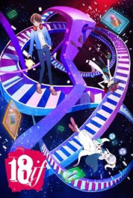
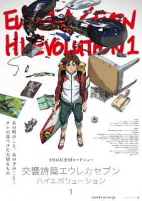
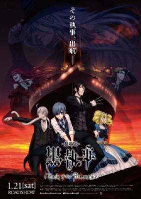
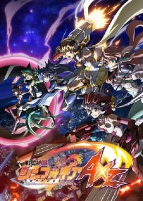

Hiện tại đang bị đứt cáp quang nên xảy ra tình trạng lag, các bạn dùng 1.1.1.1 hoặc 4G để xem đỡ lag.
Mời bạn tham gia Group tại đây! hoặc tham gia Discord tại đây! để ủng hộ AnimeVietsub
Do thiếu hút kinh phí nên quảng cáo có thể gây khó chịu, rất mong các bạn thông cảm!
Season: Mùa Hạ 2017
Danh sách Anime Season: Mùa Hạ năm 2017
MẸO SỬ DỤNG: Sử dụng chức năng Lọc Anime trên thanh công cụ để lọc những phim bạn đang cần xem chính xác nhất.
TẬP01
Soutai Sekai Lượt xem: 5,959
Soutai Sekai
HD 8 01/02 2017
Câu chuyện lấy bối cảnh ở Nhật Bản vào năm 2020. Câu chuyện xoay quanh Shin Hazama, và một phiên bản của chính anh ta đã...
Studio: Craftar Studios
Thể loại: Sci-Fi ,
Diễn viên: Izumi Kotori,
 HOÀNTẤT
18if Lượt xem: 23,857
18if
HD 9.3 13/13 2017
Một trò chơi di động và một trò chơi thực tế ảo.
Studio: Gonzo
Thể loại: Supernatural ,
Diễn viên: Tsukishiro Haruto,
HOÀNTẤT
New Game!! Lượt xem: 80,684
New Game!!
BD 9.3 12/12 2017
Mùa thứ 2 của Series phim New Game!
Studio: Doga Kobo
Thể loại: Slice of Life , Comedy ,
Diễn viên: Suzukaze Aoba,
HOÀNTẤT
Vatican Kiseki Chousakan Lượt xem: 16,746
Vatican Kiseki Chousakan
HD 6.3 12/12 2017
Thành Vatican - Đất Thánh của người Công giáo. Nơi đấy có một tổ chức tiến hành các cuộc điều tra nghiêm ngặt về "Những...
Studio: J.C.Staff
Thể loại: Supernatural , Drama , Mystery ,
Diễn viên: Hiraga Josef Kou,
HOÀNTẤT
Dive!! Lượt xem: 21,724
Dive!!
HD 8.3 12/12 2017
Bộ phim xoay quanh câu lạc bộ lặn Mizuki (MDC) đang sắp sửa đóng cửa sau khi gặp rắc rối về tài chính. Huấn luyện viên...
Studio: Zero-G
Thể loại: Sports , Comedy ,
Diễn viên: Fujitani Youichi,
 HD
Koukyoushihen Eureka Seven Hi-Evolution 1 Lượt xem: 18,285
Koukyoushihen Eureka Seven Hi-Evolution 1
HD 7 1 giờ 32 phút 2017
Tất cả bắt đầu với câu chuyện chưa được kể - sự kiện kinh thiên động địa nơi cha của Renton biến mất. Với người...
Studio: Bones
Thể loại: Sci-Fi , Drama , Adventure , Mecha ,
Diễn viên: Eureka,
 HD
Hắc Quản Gia Movie Lượt xem: 148,525
Hắc Quản Gia Movie
HD 9.8 1 giờ 40 phút 2017
Những tiếng lách cách thì thầm trong bài báo buổi sáng của Earl Ciel Phantomhive như lời người chết đang sống lại làm cho...
Studio: A-1 Pictures
Thể loại: Supernatural , Fantasy , Demons , Comedy , Historical , Action ,
Diễn viên: Michaelis Sebastian,
HD
Tớ Muốn Ăn Tụy Của Cậu Live Action Lượt xem: 55,666
Tớ Muốn Ăn Tụy Của Cậu Live Action
HD 8.2 01/01 2017
Tôi (Takumi Kitamura) khi đó là học sinh trung học. Tình cờ nhặt được nhật ký của người bạn cùng lớp là Sakura Yamauchi...
Studio: Toho
Thể loại: Drama ,
Diễn viên: Sho Tsukikawa,
HOÀNTẤT
Ballroom e Youkoso Lượt xem: 120,511
Ballroom e Youkoso
HD 9.2 24/24 2017
Fujita đã trải qua thời trung học một cách vô vị, không thể tìm bạn bè hoặc bất cứ điều gì có thể làm cậu nổi bật....
Studio: Production I.G
Thể loại: Shounen , School , Romance , Sports , Drama , Comedy ,
Diễn viên: Hyoudou Kiyoharu,
TẬP7
Clione no Akari Lượt xem: 8,444
Clione no Akari
HD 10 07/12 2017
Câu chuyện xoay quanh một cô gái mồ côi đang bị đau ốm, liên tục bị bắt nạt bởi tên Minori. Sau một ngày mưa, cô không...
Studio: drop
Thể loại: School , Drama ,
Diễn viên: Tsukihashi Kyouko,
TẬP2
Escha Chron Lượt xem: 12,863
Escha Chron
HD 7.4 02/02 2017
Câu chuyện kể về hai cô gái Escha và Chron, hai người có tính cách tương phản giống như mặt trời và mặt trăng. Hai cô gái...
Studio: Lerche
Thể loại: Sci-Fi , Slice of Life , Music ,
Diễn viên: Escha,
 HOÀNTẤT
Senki Zesshou Symphogear AXZ Lượt xem: 31,721
Senki Zesshou Symphogear AXZ
HD 8.5 13/13 2017
Mùa thứ 4 của Series phim Senki Zesshou Symphogear.
Studio: Satelight
Thể loại: Sci-Fi , Music , Action ,
Diễn viên: Tachibana Hibiki,
HD
Hibike! Euphonium Movie: Todoketai Melody Lượt xem: 27,813
Hibike! Euphonium Movie: Todoketai Melody
HD 10 1 giờ 55 phút 2017
Anime được chuyển thể từ tiểu thuyết cùng tên của tác giả Ayano Takeda ra mắt vào năm 2013. Câu chuyện kể về ban nhạc...
Studio: Kyoto Animation
Thể loại: School , Drama , Music ,
Diễn viên: Oumae Kumiko,
HD
Kimi no Koe wo Todoketai Lượt xem: 19,237
Kimi no Koe wo Todoketai
HD 8.8 1 giờ 34 phút 2017
Như tiêu đề của bộ phim thì gam màu chính của movie này là “giọng nói” là một câu chuyện xoay quanh cô gái trung học Nagisa...
Studio: Madhouse
Thể loại: Drama ,
Diễn viên: Yukiai Nagisa,
HOÀNTẤT
IDOLiSH7 Lượt xem: 62,478
IDOLiSH7
HD 9 17/17 2017
Takanashi Tsumugi làm việc trong một công ty giải trí. Ở đây, có 7 chàng trai toàn tài mỹ mạo, họ là những thần tượng được...
Studio: TROYCA
Thể loại: Shoujo , Music ,
Diễn viên: Nanase Riku,
HD
Mahou Shoujo Lyrical Nanoha: Reflection Lượt xem: 16,867
Mahou Shoujo Lyrical Nanoha: Reflection
HD 10 1 giờ 47 phút 2017
Là movie của Mahou Shoujo Lyrical Nanoha, không giống như phần 1 và 2, có một câu chuyện hoàn toàn mới sử dụng các kỹ năng...
Studio: Seven Arcs Pictures
Thể loại: Super Power , Drama , Magic , Action ,
Diễn viên: Testarossa Fate,
HD
Digimon Adventure tri. 5: Kyousei Lượt xem: 27,953
Digimon Adventure tri. 5: Kyousei
HD 7 1 giờ 36 phút 2017
Phần thứ 5 của Digimon Adventure tri.
Studio: Toei Animation
Thể loại: Drama , Comedy , Adventure , Action ,
Diễn viên: Yagami Taichi,
HD
Seitokai Yakuindomo Movie Lượt xem: 44,118
Seitokai Yakuindomo Movie
HD 9.5 60 phút 2017
Học viện Ousai ban đầu là một trường trung học nữ. Do tỷ lệ sinh giảm trong những năm gần đây, nó đã được chuyển...
Studio: GoHands
Thể loại: Shounen , School , Slice of Life , Comedy ,
Diễn viên: Amakusa Shino,
HD
Ajin: Demi-Human Lượt xem: 30,129
Ajin: Demi-Human
HD 8 109 phút 2017
Những kẻ không thể chết, tái sinh sau họa sát thân, có thể nhìn thấy hắc hồn – IPM, họ được gọi là Ajin. Một người...
Studio: Toho
Thể loại: Shounen , Live Action , Action ,
Diễn viên: Takeru Satoh,
HD
Mary Và Đoá Hoa Phù Thuỷ Lượt xem: 16,829
Mary Và Đoá Hoa Phù Thuỷ
HD 8.3 1 giờ 42 phút 2017
Chú mèo đen Tib đã dẫn Mary đến chỗ bông hoa kì lạ trong khu rừng. Khi đó, cô bé đã phát hiện ra một chiếc chổi nhỏ...
Studio: Studio Ponoc
Thể loại: Fantasy , Adventure , Magic ,
Diễn viên: Smith Mary,
HOÀNTẤT
Owarimonogatari 2nd Season Lượt xem: 69,712
Owarimonogatari 2nd Season
HD 9.7 07/07 2017
HD
Pokemon: Tớ Chọn Cậu! Lượt xem: 130,904
Pokemon: Tớ Chọn Cậu!
HD 8.7 1 giờ 38 phút 2017
The film's plot tells the story of how Satoshi and Pikachu came to know each other. Pikachu was not cooperative toward Satoshi, but Satoshi only wanted...
Studio: OLM
Thể loại: Comedy , Adventure , Kids , Action ,
Diễn viên: Pikachu,
HOÀNTẤT
Action Heroine Cheer Fruits Lượt xem: 20,260
Action Heroine Cheer Fruits
HD 8.7 11/?? 2017
"Một chiến binh anh hùng" tại một thành phố nào đó đã trở nên phổ biến và là một ngôi sao quốc gia. Vì lý do này, "nữ...
Studio: Diomedea
Thể loại: School , Slice of Life , Comedy ,
Diễn viên: Akagi An,
HOÀNTẤT
Gintama: Mitsuba hen (Live Action) Lượt xem: 44,862
Gintama: Mitsuba hen (Live Action)
HD 8 3/3 2017
Lấy bối cảnh thời kỳ suy vong của chế độ samurai ở Nhât Bản, đồng thời cũng là lúc người ngoài hành tinh Amanto hoàn...
Studio:
Thể loại: Comedy , Adventure , Historical ,
Diễn viên:
Nhân vật đang được cập nhật
HOÀNTẤT
Căn Hộ Ma Quái Lượt xem: 75,816
Căn Hộ Ma Quái
HD 8.8 26/26 2017
Cha mẹ của Inaba Yuushi đã chết trong năm đầu tiên khi cậu học trung học, và cậu chuyển đến nhà họ hàng. Mặc dù họ...
Studio: Shin-Ei Animation
Thể loại: Slice of Life , Supernatural , Mystery ,
Diễn viên: Inaba Yuushi,
HOÀNTẤT
Toàn Chức Pháp Sư 2 Lượt xem: 1,146,789
Toàn Chức Pháp Sư 2
HD 8.6 12/12 2017
Mùa thứ 2 của phim Toàn Chức Pháp Sư
Studio:
Thể loại: Cartoon , Super Power ,
Diễn viên:
Nhân vật đang được cập nhật
HOÀNTẤT
Shoukoku no Altair Lượt xem: 39,963
Shoukoku no Altair
HD 7.7 23/?? 2017
Tughril Mahmut là một pasha trẻ phục vụ Divan của Türkiye Stratocracy. Những đám mây chiến tranh đang tập trung trên đất nước...
Studio: MAPPA
Thể loại: Shounen , Fantasy , Drama , Adventure , Historical ,
Diễn viên: Tuğrul Mahmut,
HOÀNTẤT
Enmusubi no Youko-chan Lượt xem: 213,234
Enmusubi no Youko-chan
HD 8.9 24/24 2017
Dựa trên truyện Trung Quốc kể về kết duyên giữa người với yêu.Dựa trên bộ hentai nổi tiếng nhưng không phải là anime...
Studio: Haoliners Animation League
Thể loại: Cartoon , Romance , Supernatural , Comedy , Historical ,
Diễn viên:
Nhân vật đang được cập nhật
HD
Net-juu no Susume Special Lượt xem: 34,368
Net-juu no Susume Special
HD 9.7 01/01 2017
Tập Special của bộ Net-juu no Susume!!
Studio: None found, add some
Thể loại: Game , Comedy ,
Diễn viên:
Nhân vật đang được cập nhật
HD
Amanchu! Special Lượt xem: 9,212
Amanchu! Special
HD 7 23 phút 2017
Hikari Kohinata là một cô gái 15 tuổi, luôn vui vẻ và sống ở gần biển, cô dành nhiều thời gian của mình cho việc lặn như...
Studio: J.C.Staff
Thể loại: Shounen , School , Slice of Life , Comedy ,
Diễn viên: Kohinata Hikari,
Trang 1 của 3 1 2 3 Trang Cuối